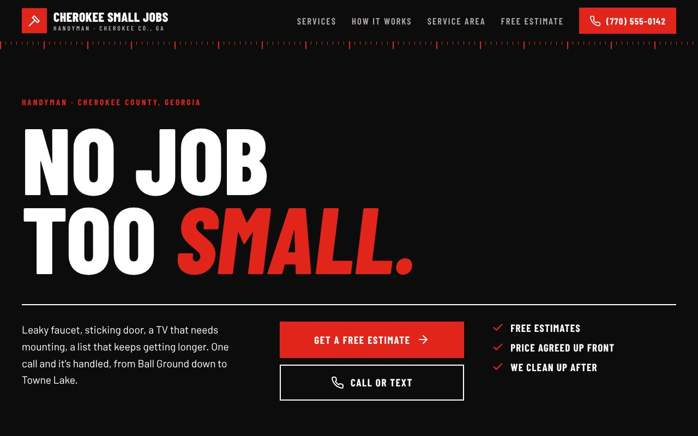
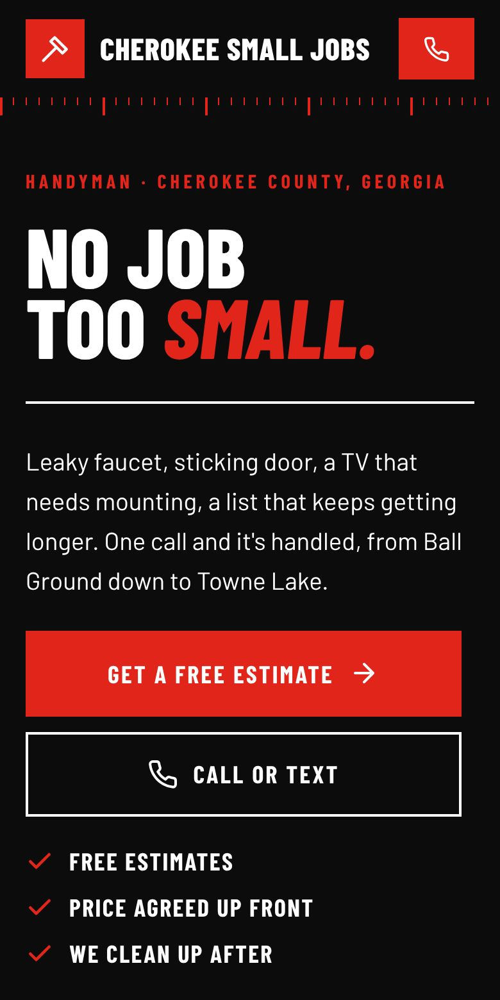

Option 1
Shop Floor
Black, loud and industrial. A huge condensed headline, hazard-tape stripes, a tape-measure ruler under the header and a scrolling ticker of services.
Pick it if you want to look like a tough, established trades outfit.
Open full page →